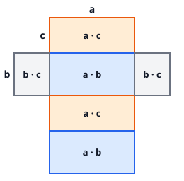

Netz und Oberfläche von Quader und Würfel
Mit einem KI-Tutor lernen
Ein KI-Tutor erklärt dir diese Seite und hilft dir bei den Aufgaben. Wähl deinen Assistenten:
Mit Claude öffnen Mit ChatGPT öffnen Mit Mistral Vibe öffnen
Du nutzt dein eigenes Konto beim Anbieter. Der Assistent ist kein Angebot von lernapps.net: lernapps liefert nur Inhalte und Aufgaben. Die Wahl gilt für alle Seiten, nur auf diesem Gerät.
Ziel: Ich kann Netze von Quader und Würfel erkennen und ihre Oberfläche berechnen. Du baust auf dem Quader und der Rechteckfläche auf.
Probier zuerst
Aufgabe
Lösung
Figur A
Beide Quadrate über der Reihe klappen nach oben und landen aufeinander. Unten bleibt ein Loch.
Figur B richtige Antwort
Die Reihe aus 4 wird zu den Seitenwänden, die anderen zwei zu Deckel und Boden.
Figur C
In einer Reihe aus 5 landet das fünfte Quadrat auf dem ersten.
In einem Netz wird jedes Quadrat genau eine der 6 Würfelflächen.
Aufklappen und Paare finden
Bei Figur B wird jedes Quadrat genau eine Würfelfläche. So ist es bei jedem Netz. Beim Quader liegen sich je zwei gleiche Rechtecke gegenüber: Boden und Deckel, vorne und hinten, links und rechts. Die Oberfläche ist die Fläche aller sechs Rechtecke zusammen – so viel Papier brauchst du zum Bekleben.

Jede Farbe kommt zweimal vor. Zähle die Rechtecke jeder Farbe.
Quelle: eigene Zeichnung. Lizenz: CC-BY-4.0.Beim Würfel sind alle sechs Flächen gleiche Quadrate mit der Seite .
Ein Beispiel
Geschenkpapier für einen Karton
Ein Karton ist 30 cm lang, 20 cm breit und 10 cm hoch. Wie viel Geschenkpapier brauchst du mindestens? Rechne jedes Paar einzeln.
Antwort – Du brauchst mindestens 2200 cm² Papier, das sind 22 dm².
Sechs Flächen, nicht drei
Merke
Wer nur rechnet, hat nur die halbe Oberfläche: Jede Fläche hat ein Gegenüber. Und nicht jede Figur aus 6 Quadraten ist ein Würfelnetz – falte in Gedanken nach.
Jetzt du
Aufgabe
Lösung
Richtige Antwort: Die Aussage stimmt nicht.
Bei sechs Quadraten in einer Reihe landen beim Falten zwei Quadrate aufeinander.
Aufgabe
Drei Beispielaufgaben, jede mit ihrer Lösung:
Aufgabe Nr. 1
Ein Quader ist 4 cm lang, 2 cm breit und 2 cm hoch. Wie groß ist seine Oberfläche?
Tipp
Welche drei verschiedenen Rechtecke gibt es, und wie oft kommt jedes vor?
Lösung
- Mit a = 4 cm, b = 2 cm und c = 2 cm: Boden und Deckel sind je 4 · 2, vorne und hinten je 4 · 2, links und rechts je 2 · 2.
- Alle sechs zusammen: O = 40 cm².
Richtige Antwort: 40 cm²
Aufgabe Nr. 2
Ein Quader ist 2 cm lang, 6 cm breit und 5 cm hoch. Wie groß ist seine Oberfläche?
Tipp
Welche drei verschiedenen Rechtecke gibt es, und wie oft kommt jedes vor?
Lösung
- Mit a = 2 cm, b = 6 cm und c = 5 cm: Boden und Deckel sind je 2 · 6, vorne und hinten je 2 · 5, links und rechts je 6 · 5.
- Alle sechs zusammen: O = 104 cm².
Richtige Antwort: 104 cm²
Aufgabe Nr. 3
Ein Quader ist 5 cm lang, 10 cm breit und 6 cm hoch. Wie groß ist seine Oberfläche?
Tipp
Welche drei verschiedenen Rechtecke gibt es, und wie oft kommt jedes vor?
Lösung
- Mit a = 5 cm, b = 10 cm und c = 6 cm: Boden und Deckel sind je 5 · 10, vorne und hinten je 5 · 6, links und rechts je 10 · 6.
- Alle sechs zusammen: O = 280 cm².
Richtige Antwort: 280 cm²
Aufgabe
Drei Beispielaufgaben, jede mit ihrer Lösung:
Aufgabe Nr. 1
Ein Würfel hat die Kantenlänge 8 cm. Wie groß ist seine Oberfläche?
Tipp
Aus wie vielen Quadraten besteht ein Würfelnetz?
Lösung
- Mit a = 8 cm: Ein Quadrat hat 8 · 8 cm².
- Sechs Quadrate: O = 6 · 8 · 8 = 384 cm².
Richtige Antwort: 384 cm²
Aufgabe Nr. 2
Ein Würfel hat die Kantenlänge 11 cm. Wie groß ist seine Oberfläche?
Tipp
Aus wie vielen Quadraten besteht ein Würfelnetz?
Lösung
- Mit a = 11 cm: Ein Quadrat hat 11 · 11 cm².
- Sechs Quadrate: O = 6 · 11 · 11 = 726 cm².
Richtige Antwort: 726 cm²
Aufgabe Nr. 3
Ein Würfel hat die Kantenlänge 5 cm. Wie groß ist seine Oberfläche?
Tipp
Aus wie vielen Quadraten besteht ein Würfelnetz?
Lösung
- Mit a = 5 cm: Ein Quadrat hat 5 · 5 cm².
- Sechs Quadrate: O = 6 · 5 · 5 = 150 cm².
Richtige Antwort: 150 cm²
Aufgabe
Drei Beispielaufgaben, jede mit ihrer Lösung:
Aufgabe Nr. 1
Eine Schachtel ohne Deckel soll von außen beklebt werden. Sie ist 15 cm lang, 15 cm breit und 20 cm hoch. Wie viel cm² Papier brauchst du?
Tipp
Welche Flächen hat die Schachtel? Zähle sie einzeln auf.
Lösung
- Die Schachtel ist 15 cm lang, 15 cm breit, 20 cm hoch. Sie hat 1 Boden (15 · 15), 2 Wände 15 · 20 und 2 Wände 15 · 20.
- Fünf Flächen zusammen: 1425 cm².
Richtige Antwort: 1.425 cm²
Aufgabe Nr. 2
Eine Schachtel ohne Deckel soll von außen beklebt werden. Sie ist 30 cm lang, 10 cm breit und 5 cm hoch. Wie viel cm² Papier brauchst du?
Tipp
Welche Flächen hat die Schachtel? Zähle sie einzeln auf.
Lösung
- Die Schachtel ist 30 cm lang, 10 cm breit, 5 cm hoch. Sie hat 1 Boden (30 · 10), 2 Wände 30 · 5 und 2 Wände 10 · 5.
- Fünf Flächen zusammen: 700 cm².
Richtige Antwort: 700 cm²
Aufgabe Nr. 3
Eine Schachtel ohne Deckel soll von außen beklebt werden. Sie ist 20 cm lang, 10 cm breit und 5 cm hoch. Wie viel cm² Papier brauchst du?
Tipp
Welche Flächen hat die Schachtel? Zähle sie einzeln auf.
Lösung
- Die Schachtel ist 20 cm lang, 10 cm breit, 5 cm hoch. Sie hat 1 Boden (20 · 10), 2 Wände 20 · 5 und 2 Wände 10 · 5.
- Fünf Flächen zusammen: 500 cm².
Richtige Antwort: 500 cm²
Aufgabe
Lösung
Richtige Antwort: 125 cm³
Eine Fläche hat 150 : 6 = 25 cm², die Kante 5 cm, das Volumen 5 · 5 · 5 = 125 cm³.
Als Nächstes drehst du die Formeln um und berechnest eine fehlende Länge, wenn Fläche oder Volumen bekannt sind.
Fehler gefunden oder eine Idee für diese App?